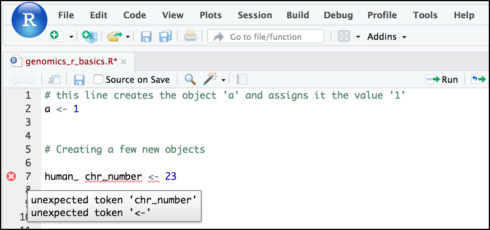

R basics in Galaxy
 Bérénice Batut
Bérénice Batut Fotis E. Psomopoulos
Fotis E. Psomopoulos Toby Hodges
Toby HodgesOverview
question Questionsobjectives Objectives
What are the basic features and objects of the R language?
requirements Requirements
Know advantages of analyzing data using R within Galaxy.
Compose an R script file containing comments, commands, objects, and functions.
Be able to work with objects (i.e. applying mathematical and logical operators, subsetting, retrieving values, etc).
- User Interface and Data Manipulation
- RStudio in Galaxy: tutorial hands-on
time Time estimation: 3 hours
level Level: Introductory level level level
Supporting Materials
last_modification Last modification: Jan 6, 2021
Introduction
comment Comment
This tutorial is significantly based on the Carpentries “Intro to R and RStudio for Genomics” lesson
R is one of the most widely-used and powerful programming languages in bioinformatics. R especially shines where a variety of statistical tools are required (e.g. RNA-Seq, population genomics, etc.) and in the generation of publication-quality graphs and figures. Rather than get into an R vs. Python debate (both are useful), keep in mind that many of the concepts you will learn apply to Python and other programming languages.
details A Brief History of R
R has been around since 1995, and was created by Ross Ihaka and Robert Gentleman at the University of Auckland, New Zealand. R is based off the S programming language developed at Bell Labs and was developed to teach intro statistics. See this slide deck by Ross Ihaka for more info on the subject.
At more than 20 years old, R is fairly mature and growing in popularity. However, programming isn’t a popularity contest. Here are key advantages of analyzing data in R:
-
R is free and open source
R is free - an advantage if you are at an institution where you have to pay for your own MATLAB or SAS license. It is important to your colleagues in parts of the world where expensive software is inaccessible.
Open source means that you can see and reuse the source. Thanks to that, R is actively developed by a community (see r-project.org), and there are regular updates.
-
R is widely used
Ok, maybe programming is a popularity contest. Because, R is used in many areas (not just bioinformatics), you are more likely to find help online when you need it. Chances are, almost any error message you run into, someone else has already experienced.
-
R is powerful
R runs on multiple platforms (Windows/MacOS/Linux). It can work with much larger datasets than popular spreadsheet programs like Microsoft Excel, and because of its scripting capabilities is far more reproducible. Also, there are thousands of available software packages for science, including genomics and other areas of life science.
comment On the content of the tutorial
We believe that every learner can achieve competency with R. You have reached competency when you find that you are able to use R to handle common analysis challenges in a reasonable amount of time (which includes time needed to look at learning materials, search for answers online, and ask colleagues for help). As you spend more time using R (there is no substitute for regular use and practice) you will find yourself gaining competency and even expertise. The more familiar you get, the more complex the analyses you will be able to carry out, with less frustration, and in less time - the fantastic world of R awaits you!
Nobody wants to learn how to use R. People want to learn how to use R to answer their own research questions! Ok, maybe some folks learn R for R’s sake, but these lessons assume that you want to start analyzing genomic data as soon as possible. Given this, there are many valuable pieces of information about R that we simply won’t have time to cover. Hopefully, we will clear the hurdle of giving you just enough knowledge to be dangerous, which can be a high bar in R! We suggest you look into the additional learning materials in the box below.
Some R skills we will not cover in these lessons
- How to create and work with R matrices and R lists
- How to create and work with loops and conditional statements, and the “apply” of functions (which are super useful, read more here)
- How to do basic string manipulations (e.g. finding patterns in text using grep, replacing text)
- How to plot using the default R graphic tools (we will cover plot creation, but will do so using the popular plotting package
ggplot2)- How to use advanced R statistical functions
tip Tip: Where to learn more
The following are good resources for learning more about R. Some of them can be quite technical, but if you are a regular R user you may ultimately need this technical knowledge.
- R for Beginners, by Emmanuel Paradis: a great starting point
- The R Manuals, by the R project people
- R contributed documentation, also linked to the R project, with materials available in several languages
- R for Data Science: a wonderful collection by noted R educators and developers Garrett Grolemund and Hadley Wickham
- Practical Data Science for Stats: not exclusively about R usage, but a nice collection of pre-prints on data science and applications for R
- Programming in R Software Carpentry lesson: several Software Carpentry lessons in R to choose from
- Data Camp Introduction to R: a fun online learning platform for Data Science, including R.
Agenda
In this tutorial, we will cover:
Before diving in the tutorial, we need to open RStudio. If you do not know how or never interacted with RStudio, please follow the dedicated tutorial.
hands_on Hands-on: Launch RStudio
Depending on which server you are using, you may be able to run RStudio directly in Galaxy. If that is not available, RStudio Cloud can be an alternative.
tip Tip: Launch RStudio in Galaxy
Currently RStudio in Galaxy is only available on UseGalaxy.eu
- Open the Rstudio tool tool by clicking here
- Click Execute
- The tool will start running and will stay running permanently
- Click on the “User” menu at the top and go to “Active InteractiveTools” and locate the RStudio instance you started.
tip Tip: Launch RStudio Cloud if not available on Galaxy
If RStudio is not available on the Galaxy instance:
- Register for RStudio Cloud, or login if you already have an account
- Create a new project
Creating objects in R
comment Reminder
At this point you should be coding along in the
r_basics.Rscript we created in the last episode. Writing your commands in the script(and commenting it) will make it easier to record what you did and why.
What might be called a variable in many languages is called an object in R.
To create an object you need:
- a name (e.g.
a) - a value (e.g.
1) - the assignment operator (
<-)
hands_on Hands-on: Create a first object
- Assign
1to the objectausing the R assignment operator<-in your scriptWrite a comment in the line above
# this line creates the object 'a' and assigns it the value '1' a <- 1- Select the lines
Execute them
tip Tip: Execute from a script
- Click on the Run the current line or selection
- Type CTRL+Enter (or CMD+Enter)
- Check the Console and Environment panels
The Console displays the lines of code run from the script and any outputs or status/warning/error messages (usually in red).
In the Environment, we have now a table:
| Values | |
|---|---|
| a | 1 |
This Environment window allows you to keep track of the objects you have created in R.
question Exercise: Create some objects in R
Create the following objects, with an appropriate name (your best guess at what name to use is fine):
- Create an object that has the value of number of pairs of human chromosomes
- Create an object that has a value of your favorite gene name
- Create an object that has this URL as its value (
ftp://ftp.ensemblgenomes.org/pub/bacteria/release-39/fasta/bacteria_5_collection/escherichia_coli_b_str_rel606/)- Create an object that has the value of the number of chromosomes in a diploid human cell
solution Solution
Here as some possible answers to the challenge:
human_chr_number <- 23gene_name <- 'pten'ensemble_url <- 'ftp://ftp.ensemblgenomes.org/pub/bacteria/release-39/fasta/bacteria_5_collection/escherichia_coli_b_str_rel606/'human_diploid_chr_num <- 36
Naming objects in R
Here are some important details about naming objects in R.
-
Avoid spaces and special characters
Object names cannot contain spaces or the minus sign (
-). You can use_to make names more readable. You should avoid using special characters in your object name (e.g.!,@,#,., etc.). Also, object names cannot begin with a number. -
Use short, easy-to-understand names
You should avoid naming your objects using single letters (e.g.
n,p, etc.). This is mostly to encourage you to use names that would make sense to anyone reading your code (a colleague, or even yourself a year from now). Also, avoiding excessively long names will make your code more readable. -
Avoid commonly used names
There are several names that may already have a definition in the R language (e.g.
mean,min,max). One clue that a name already has meaning is that if you start typing a name in RStudio and it gets a colored highlight or RStudio gives you a suggested autocompletion you have chosen a name that has a reserved meaning. -
Use the recommended assignment operator
In R, we use
<-as the preferred assignment operator.=works too, but is most commonly used in passing arguments to functions (more on functions later). There is a shortcut for the R assignment operator:- Windows execution shortcut: Alt+-
- Mac execution shortcut: Option+-
There are a few more suggestions about naming and style you may want to learn more about as you write more R code. There are several “style guides” that have advice, and one to start with is the tidyverse R style guide.
comment Pay attention to warnings in the script console
If you enter a line of code in your script that contains an error, RStudio may give you an error message and underline this mistake. Sometimes these messages are easy to understand, but often the messages may need some figuring out. Paying attention to these warnings will help you avoid mistakes.
In the example below, the object name has a space, which is not allowed in R. The error message does not say this directly, but R is “not sure” about how to assign the name to
human_ chr_numberwhen the object name we want ishuman_chr_number.
Reassigning object names or deleting objects
Once an object has a value, you can change that value by overwriting it. R will not give you a warning or error if you overwriting an object, which may or may not be a good thing depending on how you look at it.
hands_on Hands-on: Overwrite an object
Overwrite the
gene_namewith thetp53# gene_name has the value 'pten' or whatever value you used in the challenge. # We will now assign the new value 'tp53' gene_name <- 'tp53'- Check the new value in the Environment panel
- Type
gene_namein the Script panelCheck in the Console panel
> gene_name [1] "tp53"If you run a line of code that has only an object name, R will normally display the contents of that object.
You can also remove an object from R’s memory entirely
hands_on Hands-on: Remove an object
Delete the
gene_nameobject# delete the object 'gene_name' rm(gene_name)- Check that
gene_nameis not displayed in the Environment panelType
gene_nameonly in Script and check the Console> gene_name Error: object 'gene_name' not foundR tells us that the object no longer exists.
Understanding object data types or modes
In R, every object has two properties:
- Length: how many distinct values are held in that object
-
Mode: what is the classification (type) of that object.
The “mode” property corresponds to the type of data an object represents. The most common modes you will encounter in R are:
-
Numeric (num): numbers such floating point/decimals (1.0, 0.5, 3.14)
comment More specific types
There are also more specific numeric types (dbl - Double, int - Integer). These differences are not relevant for most beginners and pertain to how these values are stored in memory
- Character (chr): a sequence of letters/numbers in single
''or double" "quotes - Logical: boolean values,
TRUEorFALSE
There are a few other modes (i.e. “complex”, “raw” etc.) but these are the three we will work with in this lesson.
-
Data types are familiar in many programming languages, but also in natural language where we refer to them as the parts of speech, e.g. nouns, verbs, adverbs, etc. Once you know if a word - perhaps an unfamiliar one - is a noun, you can probably guess you can count it and make it plural if there is more than one (e.g. 1 Tuatara, or 2 Tuataras). If something is a adjective, you can usually change it into an adverb by adding “-ly” (e.g. jejune vs. jejunely). Depending on the context, you may need to decide if a word is in one category or another (e.g “cut” may be a noun when it’s on your finger, or a verb when you are preparing vegetables). These concepts have important analogies when working with R objects.
hands_on Hands-on: Create an object and check its mode
Assign
'chr02'to achromosome_nameobjectchromosome_name <- 'chr02'Check the mode of the object
mode(chromosome_name)Check the result in the console
The created object seems to a character object.
question Create objects and check their modes
- Create the following objects in R
od_600_valuewith value0.47chr_positionwith value'1001701'spockwith valueTRUEpilotwith valueEarhart- Guess their mode
- Check them using
mode()solution Solution
Object creation
> od_600_value <- 0.47 > chr_position <- '1001701' > spock <- TRUE > pilot <- Earhart [1] Error in eval(expr, envir, enclos): object 'Earhart' not foundWe cannot take a string of alphanumeric characters (e.g.
Earhart) and assign as a value for an object. In this case, R looks for an object namedEarhartbut since there is no object, no assignment can be made.Modes
od_600_value: numeric
chr_position: characterIf a series of numbers are given as a value R will consider them to be in the “character” mode if they are enclosed as single or double quotes
spock: logical
pilot> mode(pilot) Error in mode(pilot) : object 'pilot' not foundIf
Earhartdid exist, then the mode ofpilotwould be whatever the mode ofEarhartwas originally.
Mathematical and functional operations on objects
Once an object exists (which by definition also means it has a mode), R can appropriately manipulate that object. For example, objects of the numeric modes can be added, multiplied, divided, etc. R provides several mathematical (arithmetic) operators including:
+: addition-: subtraction*: multiplication/: division^or**: exponentiationa%%b: modulus (the remainder after division)
hands_on Hands-on: Execute mathematical operations
Execute
(1 + (5 ** 0.5))/2> (1 + (5 ** 0.5))/2 [1] 1.618034Multiply the object
human_chr_numberby 2> human_chr_number <- 23 # multiply the object 'human_chr_number' by 2 > human_chr_number * 2 [1] 46
question Exercise: Compute the golden ratio
One approximation of the golden ratio (\(\varphi\)) is
\[\frac{1 + \sqrt{5}}{2}\]Compute the golden ratio to 3 digits of precision using the
sqrt()andround()functions.Hint: remember the
round()function can take 2 arguments.solution Solution
> round((1 + sqrt(5))/2, digits = 3) [1] 1.618Notice that you can place one function inside of another.
Vectors
Vectors are probably the most used commonly used object type in R. A vector is a collection of values that are all of the same type (numbers, characters, etc.).
One of the most common ways to create a vector is to use the c() function - the “concatenate” or “combine” function. Inside the function you may enter one or more values, separated by a comma.
hands_on Hands-on: Create a vector
Create a
snp_genesobject containing “OXTR”, “ACTN3”, “AR”, “OPRM1”# Create the SNP gene name vector > snp_genes <- c("OXTR", "ACTN3", "AR", "OPRM1")Check how this object is stored in the Environment panel
Vectors always have a mode and a length. In the Environment panel, we could already have an insight on these properties: chr [1:4] may indicate character and 4 values.
hands_on Hands-on: Check vector properties
Check the mode of
snp_genesobject# Check the mode of 'snp_genes' > mode(snp_genes) [1] "character"Check the mode of
snp_geneslength# Check the mode of 'snp_genes' > length(snp_genes) [1] "4"Check both properties using
strfunction# Check the structure of 'snp_genes' > str(snp_genes) [1] chr [1:4] "OXTR" "ACTN3" "AR" "OPRM1"
The str() (structure) function is giving the same information as the Environmnent panel.
Vectors are quite important in R. Another data type that we will not work in this tutorial but in extra tutorial: data frames, are collections of vectors. What we learn here about vectors will pay off even more when we start working with data frames.
Creating and subsetting vectors
Once we have vectors, one thing we may want to do is specifically retrieve one or more values from our vector. To do so, we use bracket notation. We type the name of the vector followed by square brackets. In those square brackets we place the index (e.g. a number) in that bracket.
hands_on Hands-on: Get values from vectors
- Create several vectors
snpsobject with “rs53576”, “rs1815739”, “rs6152”, “rs1799971”snp_chromosomesobject with “3”, “11”, “X”, “6”snp_positionsobject with 8762685, 66560624, 67545785, 154039662# Some interesting human SNPs # while accuracy is important, typos in the data won't hurt you here snps <- c('rs53576', 'rs1815739', 'rs6152', 'rs1799971') snp_chromosomes <- c('3', '11', 'X', '6') snp_positions <- c(8762685, 66560624, 67545785, 154039662)Get the 3rd value in the
snp_genesvector# get the 3rd value in the snp_genes vector > snp_genes[3] [1] "AR"
In R, every item your vector is indexed, starting from the first item (1) through to the final number of items in your vector.
You can also retrieve a range of numbers:
hands_on Hands-on: Retrieve a range of values from vectors
Get the 1st through 3rd value in the
snp_genesvector# get the 1st through 3rd value in the snp_genes vector > snp_genes[1:3] [1] "OXTR" "ACTN3" "AR"Get the 1st, 3rd, and 4th value in the
snp_genesvector# get the 1st, 3rd, and 4th value in the snp_genes vector > snp_genes[c(1, 3, 4)] [1] "OXTR" "AR" "OPRM1"
To retrieve several (but not necessarily sequential) items from a vector, you pass a vector of indices, a vector that has the numbered positions you wish to retrieve.
There are additional (and perhaps less commonly used) ways of subsetting a vector (see these examples). Also, several of these subsetting expressions can be combined.
hands_on Hands-on: Retrieve a complex range of values from vectors
Get the 1st through the 3rd value, and 4th value in the
snp_genesvector# get the 1st through the 3rd value, and 4th value in the snp_genes vector # yes, this is a little silly in a vector of only 4 values. > snp_genes[c(1:3,4)] [1] "OXTR" "ACTN3" "AR" "OPRM1"
Adding to, removing, or replacing values in existing vectors
Once you have an existing vector, you may want to add a new item to it. To do so, you can use the c() function again to add your new value.
hands_on Hands-on: Add values to vectors
Add “CYP1A1”, “APOA5” to
snp_genesvector# add the gene 'CYP1A1' and 'APOA5' to our list of snp genes # this overwrites our existing vector snp_genes <- c(snp_genes, "CYP1A1", "APOA5")Check the content of
snp_genes> snp_genes [1] "OXTR" "ACTN3" "AR" "OPRM1" "CYP1A1" "APOA5"
To remove a value from a vection, we can use a negative index that will return a version a vector with that index’s value removed.
hands_on Hands-on: Remove values to vectors
Check value corresponding to
-6insnp_genes> snp_genes[-6] [1] "OXTR" "ACTN3" "AR" "OPRM1" "CYP1A1"Remove the 6th value of
snp_genes> snp_genes <- snp_genes[-6] > snp_genes [1] "OXTR" "ACTN3" "AR" "OPRM1" "CYP1A1"
We can also explicitly rename or add a value to our index using double bracket notation.
hands_on Hands-on: Rename values in vectors
Rename the 7th value to “APOA5”
> snp_genes[[7]]<- "APOA5" > snp_genes [1] "OXTR" "ACTN3" "AR" "OPRM1" "CYP1A1" NA "APOA5"
Notice in the operation above that R inserts an NA value to extend our vector so that the gene “APOA5” is an index 7. This may be a good or not-so-good thing depending on how you use this.
question Exercise: Examining and subsetting vectors
Which of the following are true of vectors in R?
- All vectors have a mode or a length
- All vectors have a mode and a length
- Vectors may have different lengths
- Items within a vector may be of different modes
- You can use the
c()to one or more items to an existing vector- You can use the
c()to add a vector to an exiting vectorsolution Solution
- False: vectors have both of these properties
- True
- True
- False: vectors have only one mode (e.g. numeric, character) and all items in a vector must be of this mode.
- True
- True
Logical Subsetting
There is one last set of cool subsetting capabilities we want to introduce. It is possible within R to retrieve items in a vector based on a logical evaluation or numerical comparison.
For example, let’s say we wanted get
hands_on Hands-on: Subset logically vectors
Extract all of the SNPs in our vector of SNP positions (
snp_positions) that were greater than 100,000,000> snp_positions[snp_positions > 100000000] [1] 154039662
In the square brackets you place the name of the vector followed by the comparison operator and (in this case) a numeric value. Some of the most common logical operators you will use in R are:
<: less than<=: less than or equal to>: greater than>=: greater than or equal to==: exactly equal to!=: not equal to!x: not xa | b: a or ba & b: a and b
The reason why the expression snp_positions[snp_positions > 100000000] works can be better understood if you examine what the expression snp_positions > 100000000 evaluates to:
> snp_positions > 100000000
[1] FALSE FALSE FALSE TRUE
The output above is a logical vector, the 4th element of which is TRUE. When you pass a logical vector as an index, R will return the true values:
> snp_positions[c(FALSE, FALSE, FALSE, TRUE)]
[1] 154039662
If you have never coded before, this type of situation starts to expose the “magic” of programming. We mentioned before that in the bracket notation you take your named vector followed by brackets which contain an index: named_vector[index]. The “magic” is that the index needs to evaluate to a number. So, even if it does not appear to be an integer (e.g. 1, 2, 3), as long as R can evaluate it, we will get a result. That our expression snp_positions[snp_positions > 100000000] evaluates to a number can be seen in the following situation.
How to know which index (1, 2, 3, or 4) in our vector of SNP positions was the one that was greater than 100,000,000?
hands_on Hands-on: Getting which indices of any item that evaluates as TRUE
Return the indices in our vector of SNP positions (
snp_positions) that were greater than 100,000,000> which(snp_positions > 100000000) [1] 4
Why this is important? Often in programming we will not know what inputs and values will be used when our code is executed. Rather than put in a pre-determined value (e.g 100000000) we can use an object that can take on whatever value we need.
hands_on Hands-on: Subset logically vectors
- Create a
snp_marker_cutoffcontaining100000000- Extract all of the SNPs in
snp_positionsthat were greater thansnp_marker_cutoff> snp_marker_cutoff <- 100000000 > snp_positions[snp_positions > snp_marker_cutoff] [1] 154039662
Ultimately, it’s putting together flexible, reusable code like this that gets at the “magic” of programming!
A few final vector tricks
Finally, there are a few other common retrieve or replace operations you may want to know about. First, you can check to see if any of the values of your vector are missing (i.e. are NA). Missing data will get a more detailed treatment later, but the is.NA() function will return a logical vector, with TRUE for any NA value:
hands_on Hands-on: Check for missing values
Check what are the missing values in
snp_genes# current value of 'snp_genes': # chr [1:7] "OXTR" "ACTN3" "AR" "OPRM1" "CYP1A1" NA "APOA5" > is.na(snp_genes) [1] FALSE FALSE FALSE FALSE FALSE TRUE FALSE
Sometimes, you may wish to find out if a specific value (or several values) is present a vector. You can do this using the comparison operator %in%, which will return TRUE for any value in your collection that is in the vector you are searching.
hands_on Hands-on: Check for presence of values
Check if “ACTN3” and “APOA5” are in
snp_genes# current value of 'snp_genes': # chr [1:7] "OXTR" "ACTN3" "AR" "OPRM1" "CYP1A1" NA "APOA5" # test to see if "ACTN3" or "APO5A" is in the snp_genes vector # if you are looking for more than one value, you must pass this as a vector > c("ACTN3","APOA5") %in% snp_genes [1] TRUE TRUE
question Questions
- What data types/modes are the following vectors?
snpssnp_chromosomessnp_positionssolution Solution
> mode(snps) [1] "character" > mode(snp_chromosomes) [1] "character" > mode(snp_positions) [1] "double"- Add the following values to the specified vectors:
- Add “rs662799” to the
snpsvector- Add 11 to the
snp_chromosomesvector- Add 116792991 to the
snp_positionsvectorsolution Solution
> snps <- c(snps, 'rs662799') > snps [1] "rs53576" "rs1815739" "rs6152" "rs1799971" "rs662799" > snp_chromosomes <- c(snp_chromosomes, "11") # did you use quotes? > snp_chromosomes [1] "3" "11" "X" "6" "11" > snp_positions <- c(snp_positions, 116792991) > snp_positions [1] 8762685 66560624 67545785 154039662 116792991- Make the following change to the
snp_genesvector:
- Create a new version of
snp_genesthat does not contain CYP1A1- Add 2 NA values to the end of
snp_genessolution Solution
> snp_genes <- snp_genes[-5] > snp_genes <- c(snp_genes, NA, NA) > snp_genes [1] "OXTR" "ACTN3" "AR" "OPRM1" NA "APOA5" NA NA- Using indexing, create a new vector named
combinedthat contains:
- 1st value in
snp_genes- 1st value in
snps- 1st value in
snp_chromosomes- 1st value in
snp_positionssolution Solution
> combined <- c(snp_genes[1], snps[1], snp_chromosomes[1], snp_positions[1]) > combined [1] "OXTR" "rs53576" "3" "8762685"What type of data is
combined?solution Solution
> typeof(combined) [1] "character"
Coercing values
Sometimes, it is possible that R will misinterpret the type of data represented in a vector, or store that data in a mode which prevents you from operating on the data the way you wish. For example, a long list of gene names isn’t usually thought of as a categorical variable, the way that your experimental condition (e.g. control, treatment) might be. More importantly, some R packages you use to analyze your data may expect characters as input, not factors. At other times (such as plotting or some statistical analyses) a factor may be more appropriate. Ultimately, you should know how to change the mode of an object.
First, its very important to recognize that coercion happens in R all the time. This can be a good thing when R gets it right, or a bad thing when the result is not what you expect. Consider:
> chromosomes <- c('3', '11', 'X', '6')
> mode(chromosomes)
[1] "character"
Although there are several numbers in our vector, they are all in quotes, so we have explicitly told R to consider them as characters. However, even if we removed the quotes from the numbers, R would coerce everything into a character:
> chromosomes_2 <- c(3, 11, 'X', 6)
> typeof(chromosomes_2)
[1] "character"
> chromosomes_2[1]
[1] "3"
We can use the as. functions to explicitly coerce values from one form into another.
hands_on Hands-on: Coerce values
Create a
positionsobject with “8762685”, “66560624”, “67545785”, “154039662”positions <- c("8762685", "66560624", "67545785", "154039662")Check the type and first element
> typeof(positions) [1] "character" > positions[1] [1] "8762685"Coerce into a numeric type using
as.numeric()> positions <- as.numeric(positions) > typeof(snp_positions_2) [1] "double" > snp_positions_2[1] [1] 8762685
Here the coercion is straight forward, but what would happen if we tried using as.numeric() on snp_chromosomes_2
hands_on Hands-on: Issue with coercing values
Create a
chromosomes_2object with 3, 11, ‘X’, 6chromosomes_2 <- c(3, 11, 'X', 6)Coerce into a numeric type using
as.numeric()> snp_chromosomes_2 <- as.numeric(snp_chromosomes_2) Warning message: NAs introduced by coercionCheck the content of
chromosomes_2> snp_chromosomes_2 [1] 3 11 NA 6
We see that an NA value (R’s default value for missing data) has been introduced.
Let’s summarize this section on coercion with a few take home messages:
-
Be careful to check the result when you explicitly coerce one data type into another (this is known as explicit coercion)
Ideally, you should try to see if its possible to avoid steps in your analysis that force you to coerce.
-
Check the structure (
str()) of your data before working with them!R will sometimes coerce without you asking for it. This is called (appropriately) implicit coercion. For example when we tried to create a vector with multiple data types, R chose one type through implicit coercion.
Lists
Lists are quite useful in R. You may come across lists in the way that some bioinformatics programs may store and/or return data to you. One of the key attributes of a list is that, unlike a vector, a list may contain data of more than one mode.
comment Learning more about lists
Learn more about creating and using lists using this nice tutorial. In this one example, we will create a named list and show you how to retrieve items from the list.
hands_on Hands-on: Create and manipulate list objects
Create a named list containing the genes, reference SNPs, chromomosome and position objects we create before
# Create a named list using the 'list' function and our SNP examples snp_data <- list(genes = snp_genes, reference_snp = snps, chromosome = snp_chromosomes, position = snp_positions)comment Easy reading
For easy reading we have placed each item in the list on a separate line. Nothing special about this, you can do this for any multiline commands. Just make sure the entire command (all 4 lines) are highlighted before running.
As we are doing all this inside the list() function use of the
=sign is good styleExamine the structure of the list
> str(snp_data) List of 4 $ genes : chr [1:8] "OXTR" "ACTN3" "AR" "OPRM1" ... $ refference_snp: chr [1:5] "rs53576" "rs1815739" "rs6152" "rs1799971" ... $ chromosome : chr [1:5] "3" "11" "X" "6" ... $ position : num [1:5] 8.76e+06 6.66e+07 6.75e+07 1.54e+08 1.17e+08Get all values for the
positionobject in the list> snp_data$position [1] 8762685 66560624 67545785 154039662 116792991Get the first value in the
positionobject> snp_data$position[1] [1] 8762685
Conclusion
This tutorial
keypoints Key points
It is important to understand how data are organised by R in a given object type (e.g. numeric, character, logical, etc.) and how the mode of that type determines how R will operate on that data.
Feedback
Did you use this material as an instructor? Feel free to give us feedback on how it went.

Citing this Tutorial
- Bérénice Batut, Fotis E. Psomopoulos, Toby Hodges, 2021 R basics in Galaxy (Galaxy Training Materials). /training-material/topics/introduction/tutorials/r-basics/tutorial.html Online; accessed TODAY
- Batut et al., 2018 Community-Driven Data Analysis Training for Biology Cell Systems 10.1016/j.cels.2018.05.012
details BibTeX
@misc{introduction-r-basics, author = "Bérénice Batut and Fotis E. Psomopoulos and Toby Hodges", title = "R basics in Galaxy (Galaxy Training Materials)", year = "2021", month = "01", day = "06" url = "\url{/training-material/topics/introduction/tutorials/r-basics/tutorial.html}", note = "[Online; accessed TODAY]" } @article{Batut_2018, doi = {10.1016/j.cels.2018.05.012}, url = {https://doi.org/10.1016%2Fj.cels.2018.05.012}, year = 2018, month = {jun}, publisher = {Elsevier {BV}}, volume = {6}, number = {6}, pages = {752--758.e1}, author = {B{\'{e}}r{\'{e}}nice Batut and Saskia Hiltemann and Andrea Bagnacani and Dannon Baker and Vivek Bhardwaj and Clemens Blank and Anthony Bretaudeau and Loraine Brillet-Gu{\'{e}}guen and Martin {\v{C}}ech and John Chilton and Dave Clements and Olivia Doppelt-Azeroual and Anika Erxleben and Mallory Ann Freeberg and Simon Gladman and Youri Hoogstrate and Hans-Rudolf Hotz and Torsten Houwaart and Pratik Jagtap and Delphine Larivi{\`{e}}re and Gildas Le Corguill{\'{e}} and Thomas Manke and Fabien Mareuil and Fidel Ram{\'{\i}}rez and Devon Ryan and Florian Christoph Sigloch and Nicola Soranzo and Joachim Wolff and Pavankumar Videm and Markus Wolfien and Aisanjiang Wubuli and Dilmurat Yusuf and James Taylor and Rolf Backofen and Anton Nekrutenko and Björn Grüning}, title = {Community-Driven Data Analysis Training for Biology}, journal = {Cell Systems} }
congratulations Congratulations on successfully completing this tutorial!
curriculum Do you want to extend your knowledge? Follow one of our recommended follow-up trainings:
- Introduction to Galaxy Analyses
- Advanced R in Galaxy: tutorial hands-on